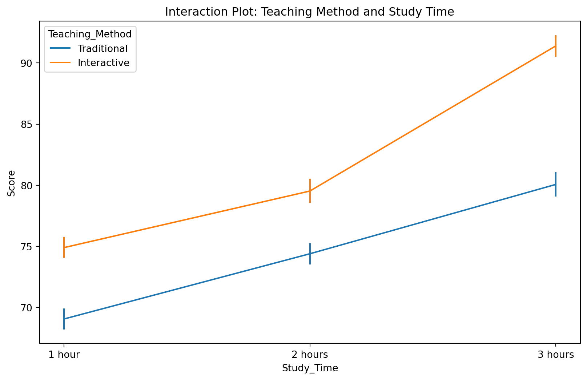

Chapter 7: Analysis Of Variance
One-way ANOVA
Definition
A statistical test used to compare the means of three or more groups based on one independent variable (factor). One-way ANOVA examines if there are any statistically significant differences among the means of the groups. It is called “one-way” because it investigates the effect of a single factor.
Purpose
To determine if there are statistically significant differences between the means of the groups. One-way ANOVA helps in understanding whether the observed variations between group means are due to the independent variable or by random chance.
Assumptions
- Independence: Observations are independent of each other, meaning the outcome of one observation does not influence another.
- Normality: The data in each group are normally distributed. This assumption can be checked using normality tests like the Shapiro-Wilk test.
- Homogeneity of variances: The variance among the groups is approximately equal. This can be tested using Levene’s test or Bartlett’s test.
Formula
The F-statistic in one-way ANOVA is calculated as: \[ F = \frac{\text{between-group variance}}{\text{within-group variance}} \] where the between-group variance measures the variability due to the interaction between the different groups, and the within-group variance measures the variability within each group.
Example
Comparing the mean test scores of students from three different schools can reveal if there are differences in educational outcomes across schools.
Post-hoc Tests
Post-hoc tests are performed after finding a significant F-ratio to identify which specific groups differ. 1. Tukey’s HSD (Honestly Significant Difference): Used to determine which specific group means are different from each other. 2. Bonferroni Correction: Adjusts the significance level to control for Type I errors when multiple comparisons are made, reducing the chances of falsely identifying a difference.
Show the code
import numpy as np
import pandas as pd
import matplotlib.pyplot as plt
import seaborn as sns
from scipy import stats
from statsmodels.stats.multicomp import pairwise_tukeyhsd
from statsmodels.formula.api import ols
from statsmodels.stats.anova import anova_lm
# Set random seed for reproducibility
np.random.seed(42)
# Generate sample data
school_a = np.random.normal(75, 10, 50)
school_b = np.random.normal(80, 10, 50)
school_c = np.random.normal(85, 10, 50)
# Create a DataFrame
df = pd.DataFrame({
'score': np.concatenate([school_a, school_b, school_c]),
'school': np.repeat(['A', 'B', 'C'], 50)
})
# 1. Visualize the data
plt.figure(figsize=(10, 6))
sns.boxplot(x='school', y='score', data=df)
plt.title('Test Scores by School')
plt.show()
# 2. Check assumptions
# 2.1 Normality test (Shapiro-Wilk)
def check_normality(group):
stat, p = stats.shapiro(group)
return p > 0.05
normality_results = df.groupby('school')['score'].apply(check_normality)
print("Normality assumption met for each group:")
print(normality_results)
# 2.2 Homogeneity of variances (Levene's test)
levene_stat, levene_p = stats.levene(school_a, school_b, school_c)
print(f"\nHomogeneity of variances (Levene's test):")
print(f"p-value: {levene_p:.4f}")
print(f"Assumption met: {levene_p > 0.05}")
# 3. Perform One-way ANOVA
model = ols('score ~ C(school)', data=df).fit()
anova_table = anova_lm(model, typ=2)
print("\nOne-way ANOVA results:")
print(anova_table)
# 4. Post-hoc test (Tukey's HSD)
tukey_results = pairwise_tukeyhsd(df['score'], df['school'])
print("\nTukey's HSD test results:")
print(tukey_results)
# 5. Visualize the results
plt.figure(figsize=(10, 6))
sns.violinplot(x='school', y='score', data=df, inner="box")
plt.title('Distribution of Test Scores by School')
plt.show()
# 6. Effect size (Eta-squared)
ss_total = np.sum((df['score'] - df['score'].mean())**2)
ss_between = np.sum(df.groupby('school')['score'].count() *
(df.groupby('school')['score'].mean() - df['score'].mean())**2)
eta_squared = ss_between / ss_total
print(f"\nEffect size (Eta-squared): {eta_squared:.4f}")Normality assumption met for each group:
school
A True
B True
C True
Name: score, dtype: bool
Homogeneity of variances (Levene's test):
p-value: 0.5807
Assumption met: True
One-way ANOVA results:
sum_sq df F PR(>F)
C(school) 3592.756768 2.0 20.204865 1.768489e-08
Residual 13069.507012 147.0 NaN NaN
Tukey's HSD test results:
Multiple Comparison of Means - Tukey HSD, FWER=0.05
====================================================
group1 group2 meandiff p-adj lower upper reject
----------------------------------------------------
A B 7.4325 0.0004 2.9675 11.8976 True
A C 11.8619 0.0 7.3968 16.3269 True
B C 4.4293 0.0524 -0.0357 8.8944 False
----------------------------------------------------
Effect size (Eta-squared): 0.2156Two-way ANOVA
Definition
A statistical test used to examine the influence of two different independent variables (factors) on one dependent variable. Two-way ANOVA assesses both the main effects of each factor and the interaction effect between the factors.
Purpose
To determine if there are any significant main effects and interaction effects between the factors on the dependent variable. This helps in understanding how two factors together affect the outcome.
Assumptions
- Independence: Observations are independent.
- Normality: The data in each cell are normally distributed.
- Homogeneity of variances: Variances are equal across groups.
Formula
The F-statistic for two-way ANOVA is calculated as: \[ F = \frac{\text{variance due to factor A, factor B, and interaction}}{\text{within-group variance}} \] where the variance due to factors and interaction captures the combined effects of the independent variables and their interaction on the dependent variable.
Example
Examining the effects of different teaching methods (factor A) and different study times (factor B) on student performance can reveal if these factors individually or together influence scores.
Interaction Effects
Definition
Occurs when the effect of one factor depends on the level of the other factor. It indicates that the influence of one independent variable on the dependent variable changes across the levels of the second independent variable.
Example
The effect of teaching method (e.g., traditional vs. interactive) might differ for students who study for 1 hour versus those who study for 3 hours, indicating an interaction between study time and teaching method.
Show the code
import numpy as np
import pandas as pd
import matplotlib.pyplot as plt
import seaborn as sns
from scipy import stats
from statsmodels.stats.multicomp import pairwise_tukeyhsd
from statsmodels.formula.api import ols
from statsmodels.stats.anova import anova_lm
# Set random seed for reproducibility
np.random.seed(42)
# Generate sample data
n_samples = 30
teaching_methods = ['Traditional', 'Interactive']
study_times = ['1 hour', '2 hours', '3 hours']
data = []
for method in teaching_methods:
for time in study_times:
if method == 'Traditional':
base_score = 70
else:
base_score = 75
if time == '1 hour':
time_effect = 0
elif time == '2 hours':
time_effect = 5
else:
time_effect = 10
# Add interaction effect
if method == 'Interactive' and time == '3 hours':
interaction_effect = 5
else:
interaction_effect = 0
scores = np.random.normal(base_score + time_effect + interaction_effect, 5, n_samples)
data.extend([(score, method, time) for score in scores])
# Create DataFrame
df = pd.DataFrame(data, columns=['Score', 'Teaching_Method', 'Study_Time'])
# 1. Visualize the data
plt.figure(figsize=(12, 6))
sns.boxplot(x='Study_Time', y='Score', hue='Teaching_Method', data=df)
plt.title('Student Scores by Teaching Method and Study Time')
plt.show()
# 2. Check assumptions
# 2.1 Normality test (Shapiro-Wilk)
def check_normality(group):
_, p = stats.shapiro(group)
return p > 0.05
normality_results = df.groupby(['Teaching_Method', 'Study_Time'])['Score'].apply(check_normality)
print("Normality assumption met for each group:")
print(normality_results)
# 2.2 Homogeneity of variances (Levene's test)
levene_stat, levene_p = stats.levene(*[group['Score'].values for name, group in df.groupby(['Teaching_Method', 'Study_Time'])])
print(f"\nHomogeneity of variances (Levene's test):")
print(f"p-value: {levene_p:.4f}")
print(f"Assumption met: {levene_p > 0.05}")
# 3. Perform Two-way ANOVA
model = ols('Score ~ C(Teaching_Method) + C(Study_Time) + C(Teaching_Method):C(Study_Time)', data=df).fit()
anova_table = anova_lm(model, typ=2)
print("\nTwo-way ANOVA results:")
print(anova_table)
# 4. Post-hoc tests
# Tukey's HSD for main effects
for factor in ['Teaching_Method', 'Study_Time']:
print(f"\nTukey's HSD test results for {factor}:")
tukey_results = pairwise_tukeyhsd(df['Score'], df[factor])
print(tukey_results)
# 5. Visualize interaction effects
plt.figure(figsize=(10, 6))
sns.lineplot(x='Study_Time', y='Score', hue='Teaching_Method', data=df, err_style='bars', ci=68)
plt.title('Interaction Plot: Teaching Method and Study Time')
plt.show()
# 6. Effect sizes
def eta_squared(aov):
aov['eta_sq'] = 'NaN'
aov['eta_sq'] = aov[:-1]['sum_sq'] / sum(aov['sum_sq'])
return aov
anova_table = eta_squared(anova_table)
print("\nANOVA table with effect sizes (eta-squared):")
print(anova_table)
# 7. Simple main effects analysis
for time in study_times:
subset = df[df['Study_Time'] == time]
model = ols('Score ~ C(Teaching_Method)', data=subset).fit()
anova_result = anova_lm(model, typ=2)
print(f"\nSimple main effect of Teaching Method at {time}:")
print(anova_result)
for method in teaching_methods:
subset = df[df['Teaching_Method'] == method]
model = ols('Score ~ C(Study_Time)', data=subset).fit()
anova_result = anova_lm(model, typ=2)
print(f"\nSimple main effect of Study Time for {method} method:")
print(anova_result)Normality assumption met for each group:
Teaching_Method Study_Time
Interactive 1 hour True
2 hours True
3 hours True
Traditional 1 hour True
2 hours True
3 hours True
Name: Score, dtype: bool
Homogeneity of variances (Levene's test):
p-value: 0.7383
Assumption met: True
Two-way ANOVA results:
sum_sq df F PR(>F)
C(Teaching_Method) 2486.451643 1.0 109.830511 3.126282e-20
C(Study_Time) 5815.568130 2.0 128.441432 5.476868e-35
C(Teaching_Method):C(Study_Time) 345.318080 2.0 7.626624 6.683656e-04
Residual 3939.183960 174.0 NaN NaN
Tukey's HSD test results for Teaching_Method:
Multiple Comparison of Means - Tukey HSD, FWER=0.05
=============================================================
group1 group2 meandiff p-adj lower upper reject
-------------------------------------------------------------
Interactive Traditional -7.4333 0.0 -9.6493 -5.2174 True
-------------------------------------------------------------
Tukey's HSD test results for Study_Time:
Multiple Comparison of Means - Tukey HSD, FWER=0.05
======================================================
group1 group2 meandiff p-adj lower upper reject
------------------------------------------------------
1 hour 2 hours 4.9807 0.0001 2.3117 7.6497 True
1 hour 3 hours 13.7502 0.0 11.0812 16.4192 True
2 hours 3 hours 8.7695 0.0 6.1005 11.4385 True
------------------------------------------------------/var/folders/v8/l5r44ftx4g5bx2y5fhdpcmmh0000gn/T/ipykernel_59729/255884064.py:83: FutureWarning:
The `ci` parameter is deprecated. Use `errorbar=('ci', 68)` for the same effect.
/Users/ravishankar/miniforge3/lib/python3.10/site-packages/seaborn/_oldcore.py:1119: FutureWarning:
use_inf_as_na option is deprecated and will be removed in a future version. Convert inf values to NaN before operating instead.
/Users/ravishankar/miniforge3/lib/python3.10/site-packages/seaborn/_oldcore.py:1119: FutureWarning:
use_inf_as_na option is deprecated and will be removed in a future version. Convert inf values to NaN before operating instead.
/Users/ravishankar/miniforge3/lib/python3.10/site-packages/seaborn/_oldcore.py:1075: FutureWarning:
When grouping with a length-1 list-like, you will need to pass a length-1 tuple to get_group in a future version of pandas. Pass `(name,)` instead of `name` to silence this warning.
/Users/ravishankar/miniforge3/lib/python3.10/site-packages/seaborn/_oldcore.py:1075: FutureWarning:
When grouping with a length-1 list-like, you will need to pass a length-1 tuple to get_group in a future version of pandas. Pass `(name,)` instead of `name` to silence this warning.

ANOVA table with effect sizes (eta-squared):
sum_sq df F \
C(Teaching_Method) 2486.451643 1.0 109.830511
C(Study_Time) 5815.568130 2.0 128.441432
C(Teaching_Method):C(Study_Time) 345.318080 2.0 7.626624
Residual 3939.183960 174.0 NaN
PR(>F) eta_sq
C(Teaching_Method) 3.126282e-20 0.197549
C(Study_Time) 5.476868e-35 0.462047
C(Teaching_Method):C(Study_Time) 6.683656e-04 0.027436
Residual NaN NaN
Simple main effect of Teaching Method at 1 hour:
sum_sq df F PR(>F)
C(Teaching_Method) 511.492260 1.0 25.012323 0.000006
Residual 1186.077414 58.0 NaN NaN
Simple main effect of Teaching Method at 2 hours:
sum_sq df F PR(>F)
C(Teaching_Method) 394.910767 1.0 16.490209 0.000149
Residual 1388.995434 58.0 NaN NaN
Simple main effect of Teaching Method at 3 hours:
sum_sq df F PR(>F)
C(Teaching_Method) 1925.366696 1.0 81.863763 1.105686e-12
Residual 1364.111112 58.0 NaN NaN
Simple main effect of Study Time for Traditional method:
sum_sq df F PR(>F)
C(Study_Time) 1817.264830 2.0 40.975636 2.893768e-13
Residual 1929.220089 87.0 NaN NaN
Simple main effect of Study Time for Interactive method:
sum_sq df F PR(>F)
C(Study_Time) 4343.621380 2.0 94.005436 1.808708e-22
Residual 2009.963871 87.0 NaN NaNMANOVA
Definition
Multivariate analysis of variance, a technique used to compare the means of multiple dependent variables across groups. MANOVA extends ANOVA by considering multiple dependent variables simultaneously.
Purpose
To determine if the multivariate mean vectors of the groups are significantly different. It helps in understanding if groups differ on a combination of dependent variables.
Assumptions
- Independence: Observations are independent.
- Multivariate Normality: The data follow a multivariate normal distribution.
- Homogeneity of Covariance Matrices: The covariance matrices of the dependent variables are equal across groups.
Example
Comparing the effects of different diets on weight loss, cholesterol level, and blood pressure can reveal if dietary interventions influence these health metrics collectively.
Post-hoc Tests
- Discriminant Analysis: Used to determine which dependent variables contribute most to the group differences.
- Bonferroni Correction: Adjusts the significance level for multiple comparisons, controlling for Type I errors.
Show the code
import numpy as np
import pandas as pd
import statsmodels.api as sm
from statsmodels.multivariate.manova import MANOVA
from scipy import stats
from sklearn.discriminant_analysis import LinearDiscriminantAnalysis
# Generate sample data
np.random.seed(42)
n_samples = 99 # Ensure equal group sizes
# Create three groups (e.g., different diets)
groups = np.repeat(['A', 'B', 'C'], n_samples // 3)
# Generate dependent variables (weight loss, cholesterol, blood pressure)
weight_loss = np.random.normal(5, 2, n_samples)
cholesterol = np.random.normal(180, 20, n_samples)
blood_pressure = np.random.normal(120, 10, n_samples)
# Add group effects
weight_loss[groups == 'B'] += 2
weight_loss[groups == 'C'] += 4
cholesterol[groups == 'B'] -= 10
cholesterol[groups == 'C'] -= 20
blood_pressure[groups == 'B'] -= 5
blood_pressure[groups == 'C'] -= 10
# Create a DataFrame
data = pd.DataFrame({
'Group': groups,
'Weight_Loss': weight_loss,
'Cholesterol': cholesterol,
'Blood_Pressure': blood_pressure
})
# Perform MANOVA
dependent_vars = ['Weight_Loss', 'Cholesterol', 'Blood_Pressure']
manova = MANOVA.from_formula('Weight_Loss + Cholesterol + Blood_Pressure ~ Group', data=data)
print(manova.mv_test())
# Post-hoc tests
## Discriminant Analysis using sklearn
X = data[dependent_vars]
y = data['Group']
lda = LinearDiscriminantAnalysis()
lda.fit(X, y)
print("\nDiscriminant Analysis:")
for i, class_name in enumerate(lda.classes_):
print(f"\nCoefficients for class {class_name}:")
for feature, coef in zip(dependent_vars, lda.coef_[i]):
print(f"{feature}: {coef:.4f}")
## Bonferroni-corrected pairwise comparisons
def bonferroni_pairwise(data, dv, group):
groups = data[group].unique()
n_comparisons = len(groups) * (len(groups) - 1) // 2
alpha = 0.05 / n_comparisons # Bonferroni correction
results = []
for i, g1 in enumerate(groups):
for g2 in groups[i+1:]:
t_stat, p_value = stats.ttest_ind(data[data[group] == g1][dv],
data[data[group] == g2][dv])
results.append((g1, g2, dv, t_stat, p_value, p_value < alpha))
return pd.DataFrame(results, columns=['Group1', 'Group2', 'Variable', 'T-statistic', 'P-value', 'Significant'])
print("\nBonferroni-corrected Pairwise Comparisons:")
for dv in dependent_vars:
print(f"\n{dv}:")
print(bonferroni_pairwise(data, dv, 'Group')) Multivariate linear model
===============================================================
---------------------------------------------------------------
Intercept Value Num DF Den DF F Value Pr > F
---------------------------------------------------------------
Wilks' lambda 0.0119 3.0000 94.0000 2612.6986 0.0000
Pillai's trace 0.9881 3.0000 94.0000 2612.6986 0.0000
Hotelling-Lawley trace 83.3840 3.0000 94.0000 2612.6986 0.0000
Roy's greatest root 83.3840 3.0000 94.0000 2612.6986 0.0000
---------------------------------------------------------------
---------------------------------------------------------------
Group Value Num DF Den DF F Value Pr > F
---------------------------------------------------------------
Wilks' lambda 0.4520 6.0000 188.0000 15.2704 0.0000
Pillai's trace 0.5519 6.0000 190.0000 12.0675 0.0000
Hotelling-Lawley trace 1.2036 6.0000 123.5714 18.7589 0.0000
Roy's greatest root 1.1964 3.0000 95.0000 37.8861 0.0000
===============================================================
Discriminant Analysis:
Coefficients for class A:
Weight_Loss: -0.5772
Cholesterol: 0.0194
Blood_Pressure: 0.0537
Coefficients for class B:
Weight_Loss: -0.0441
Cholesterol: -0.0016
Blood_Pressure: -0.0083
Coefficients for class C:
Weight_Loss: 0.6213
Cholesterol: -0.0178
Blood_Pressure: -0.0454
Bonferroni-corrected Pairwise Comparisons:
Weight_Loss:
Group1 Group2 Variable T-statistic P-value Significant
0 A B Weight_Loss -4.253288 7.000627e-05 True
1 A C Weight_Loss -9.349441 1.394369e-13 True
2 B C Weight_Loss -5.203521 2.202444e-06 True
Cholesterol:
Group1 Group2 Variable T-statistic P-value Significant
0 A B Cholesterol 1.974127 0.052687 False
1 A C Cholesterol 3.809665 0.000315 True
2 B C Cholesterol 1.933426 0.057609 False
Blood_Pressure:
Group1 Group2 Variable T-statistic P-value Significant
0 A B Blood_Pressure 2.576242 0.012306 True
1 A C Blood_Pressure 4.507636 0.000029 True
2 B C Blood_Pressure 1.682561 0.097333 FalseRepeated Measures ANOVA
Definition
A statistical test used for comparing means when the same subjects are measured multiple times under different conditions or time points.
Purpose
To determine if there are significant differences across time points or conditions. It accounts for the correlation between measurements on the same subjects.
Assumptions
- Sphericity: The variances of the differences between all combinations of related groups are equal. This can be tested using Mauchly’s test.
- Normality: The data are normally distributed at each time point.
Example
Comparing the effects of a training program on performance measured at three different time points (baseline, mid, and post-training) helps in assessing the program’s impact over time.
Post-hoc Tests
- Pairwise Comparisons: Used to determine which time points or conditions are significantly different from each other.
- Bonferroni Correction: Adjusts the significance level for multiple comparisons, reducing the risk of Type I errors.
Show the code
import numpy as np
import pandas as pd
import pingouin as pg
from scipy import stats
import warnings
# Suppress specific warnings
warnings.filterwarnings("ignore", category=RuntimeWarning, module="scipy.stats")
# Generate sample data
np.random.seed(42)
n_subjects = 30
# Create data for three time points (baseline, mid, post-training)
baseline = np.random.normal(50, 10, n_subjects)
mid = baseline + np.random.normal(5, 5, n_subjects)
post = mid + np.random.normal(5, 5, n_subjects)
# Create a DataFrame in long format
data = pd.DataFrame({
'Subject': np.repeat(range(1, n_subjects + 1), 3),
'Time': np.tile(['Baseline', 'Mid', 'Post'], n_subjects),
'Performance': np.concatenate([baseline, mid, post])
})
print("Data sample:")
print(data.head(10))
print("\n")
# Test for normality (for each time point)
print("Normality Test (Shapiro-Wilk):")
for time in ['Baseline', 'Mid', 'Post']:
_, p_value = stats.shapiro(data[data['Time'] == time]['Performance'])
print(f"{time}: p-value = {p_value:.4f}")
print("\n")
# Test for sphericity
sphericity = pg.sphericity(data, dv='Performance', subject='Subject', within='Time')
print("Sphericity Test (Mauchly's):")
if isinstance(sphericity, pd.DataFrame):
print(f"W = {sphericity['W'].iloc[0]:.4f}, p-value = {sphericity['p-value'].iloc[0]:.4f}")
else:
print(f"W = {sphericity[0]:.4f}, p-value = {sphericity[1]:.4f}")
print("\n")
# Perform Repeated Measures ANOVA
aov = pg.rm_anova(data=data, dv='Performance', within='Time', subject='Subject', correction=True)
print("Repeated Measures ANOVA Results:")
print(aov)
print("\n")
# Post-hoc pairwise comparisons with Bonferroni correction
posthoc = pg.pairwise_tests(data=data, dv='Performance', within='Time', subject='Subject',
padjust='bonf', parametric=True)
print("Post-hoc Pairwise Comparisons (Bonferroni-corrected):")
print(posthoc[['A', 'B', 'T', 'p-corr']])Data sample:
Subject Time Performance
0 1 Baseline 54.967142
1 1 Mid 48.617357
2 1 Post 56.476885
3 2 Baseline 65.230299
4 2 Mid 47.658466
5 2 Post 47.658630
6 3 Baseline 65.792128
7 3 Mid 57.674347
8 3 Post 45.305256
9 4 Baseline 55.425600
Normality Test (Shapiro-Wilk):
Baseline: p-value = 0.8581
Mid: p-value = 0.2716
Post: p-value = 0.9305
Sphericity Test (Mauchly's):
W = 0.0000, p-value = 0.6671
Repeated Measures ANOVA Results:
Source ddof1 ddof2 F p-unc p-GG-corr ng2 eps \
0 Time 2 58 3.475082 0.037548 0.052321 0.068356 0.750247
sphericity W-spher p-spher
0 False 0.667106 0.003457
Post-hoc Pairwise Comparisons (Bonferroni-corrected):
A B T p-corr
0 Baseline Mid 3.643375 0.003131
1 Baseline Post 1.969708 0.175469
2 Mid Post -0.227000 1.000000Mixed-effects Models
Definition
Models that incorporate both fixed effects (parameters associated with an entire population) and random effects (parameters associated with individual experimental units).
Purpose
To account for variability within and between experimental units. Mixed-effects models are useful when data have a hierarchical or nested structure.
Assumptions
- Independence: Observations are independent.
- Normality: The random effects and residuals are normally distributed.
- Homogeneity of variances: Variances are equal across groups.
Example
Studying the effect of a drug on blood pressure where patients are nested within different hospitals. The fixed effects might include the drug dosage, while random effects account for variability between hospitals.
Components
- Fixed Effects: Factors of interest that are consistent and repeatable (e.g., drug dosage).
- Random Effects: Factors that introduce random variability, often related to experimental units (e.g., patients within hospitals).
Mixed-effects models allow for more flexible modeling of complex data structures, capturing both the fixed and random sources of variability.
Show the code
import pandas as pd
import numpy as np
import statsmodels.api as sm
import statsmodels.formula.api as smf
# Set random seed for reproducibility
np.random.seed(123)
# Create sample data
n_subjects = 100
n_observations = 5
# Create subject IDs
subject_ids = np.repeat(range(n_subjects), n_observations)
# Create a continuous predictor (fixed effect)
x = np.random.normal(0, 1, n_subjects * n_observations)
# Create random intercepts for each subject
random_intercepts = np.random.normal(0, 1, n_subjects)
random_intercepts = np.repeat(random_intercepts, n_observations)
# Create the response variable
y = 2 + 0.5 * x + random_intercepts + np.random.normal(0, 1, n_subjects * n_observations)
# Create a DataFrame
data = pd.DataFrame({
'subject': subject_ids,
'x': x,
'y': y
})
# Fit mixed-effects model
mixed_model = smf.mixedlm("y ~ x", data, groups=data["subject"])
mixed_model_fit = mixed_model.fit()
# Print the summary of the model
print(mixed_model_fit.summary())
# Access fixed effects
print("\nFixed Effects:")
print(mixed_model_fit.fe_params)
# Access random effects
print("\nRandom Effects:")
print(mixed_model_fit.random_effects) Mixed Linear Model Regression Results
=======================================================
Model: MixedLM Dependent Variable: y
No. Observations: 500 Method: REML
No. Groups: 100 Scale: 0.9343
Min. group size: 5 Log-Likelihood: -786.9526
Max. group size: 5 Converged: Yes
Mean group size: 5.0
-------------------------------------------------------
Coef. Std.Err. z P>|z| [0.025 0.975]
-------------------------------------------------------
Intercept 2.046 0.109 18.850 0.000 1.834 2.259
x 0.502 0.048 10.372 0.000 0.407 0.596
Group Var 0.991 0.194
=======================================================
Fixed Effects:
Intercept 2.046343
x 0.501567
dtype: float64
Random Effects:
{0: Group 0.833227
dtype: float64, 1: Group 0.295366
dtype: float64, 2: Group 0.048599
dtype: float64, 3: Group 0.602883
dtype: float64, 4: Group 1.198832
dtype: float64, 5: Group 0.962903
dtype: float64, 6: Group -1.544203
dtype: float64, 7: Group -0.669103
dtype: float64, 8: Group -1.173802
dtype: float64, 9: Group -0.540463
dtype: float64, 10: Group 0.36338
dtype: float64, 11: Group -0.502999
dtype: float64, 12: Group 1.279509
dtype: float64, 13: Group 0.530782
dtype: float64, 14: Group -1.101358
dtype: float64, 15: Group 0.756257
dtype: float64, 16: Group 0.173576
dtype: float64, 17: Group 0.605264
dtype: float64, 18: Group -0.349019
dtype: float64, 19: Group 0.685224
dtype: float64, 20: Group -1.684983
dtype: float64, 21: Group 0.113525
dtype: float64, 22: Group -0.979014
dtype: float64, 23: Group -0.446821
dtype: float64, 24: Group -0.327696
dtype: float64, 25: Group 0.928362
dtype: float64, 26: Group 0.548056
dtype: float64, 27: Group -1.021069
dtype: float64, 28: Group 0.420334
dtype: float64, 29: Group 1.059521
dtype: float64, 30: Group 0.282688
dtype: float64, 31: Group -1.241975
dtype: float64, 32: Group -0.755129
dtype: float64, 33: Group -1.075722
dtype: float64, 34: Group 0.915185
dtype: float64, 35: Group 1.363179
dtype: float64, 36: Group 0.751029
dtype: float64, 37: Group -0.399462
dtype: float64, 38: Group -0.096688
dtype: float64, 39: Group 0.181529
dtype: float64, 40: Group -1.685085
dtype: float64, 41: Group -0.773221
dtype: float64, 42: Group -0.001646
dtype: float64, 43: Group 0.556848
dtype: float64, 44: Group -0.509259
dtype: float64, 45: Group 0.976162
dtype: float64, 46: Group -2.407184
dtype: float64, 47: Group -1.097969
dtype: float64, 48: Group -0.180763
dtype: float64, 49: Group 0.492062
dtype: float64, 50: Group 0.013466
dtype: float64, 51: Group -0.609564
dtype: float64, 52: Group -0.417444
dtype: float64, 53: Group -1.35041
dtype: float64, 54: Group 0.866563
dtype: float64, 55: Group -0.109798
dtype: float64, 56: Group 0.024642
dtype: float64, 57: Group -0.013562
dtype: float64, 58: Group 1.258934
dtype: float64, 59: Group 0.301441
dtype: float64, 60: Group 0.248565
dtype: float64, 61: Group -0.326047
dtype: float64, 62: Group -1.721601
dtype: float64, 63: Group 0.267888
dtype: float64, 64: Group 1.470895
dtype: float64, 65: Group 1.187467
dtype: float64, 66: Group -1.330296
dtype: float64, 67: Group 0.657887
dtype: float64, 68: Group -0.719584
dtype: float64, 69: Group 0.801687
dtype: float64, 70: Group 0.022697
dtype: float64, 71: Group -0.54018
dtype: float64, 72: Group 0.512575
dtype: float64, 73: Group 0.13111
dtype: float64, 74: Group 0.837551
dtype: float64, 75: Group 1.22842
dtype: float64, 76: Group -0.175459
dtype: float64, 77: Group -0.979212
dtype: float64, 78: Group 1.059102
dtype: float64, 79: Group 0.148166
dtype: float64, 80: Group -0.674993
dtype: float64, 81: Group -1.938613
dtype: float64, 82: Group 0.957338
dtype: float64, 83: Group 0.235062
dtype: float64, 84: Group -0.914114
dtype: float64, 85: Group 0.827874
dtype: float64, 86: Group 0.443387
dtype: float64, 87: Group -1.256426
dtype: float64, 88: Group -0.30238
dtype: float64, 89: Group 0.950357
dtype: float64, 90: Group 2.522972
dtype: float64, 91: Group -0.610224
dtype: float64, 92: Group 0.412832
dtype: float64, 93: Group 1.76076
dtype: float64, 94: Group 0.445532
dtype: float64, 95: Group -0.066341
dtype: float64, 96: Group -0.864054
dtype: float64, 97: Group -0.96926
dtype: float64, 98: Group 0.841861
dtype: float64, 99: Group -0.907123
dtype: float64}